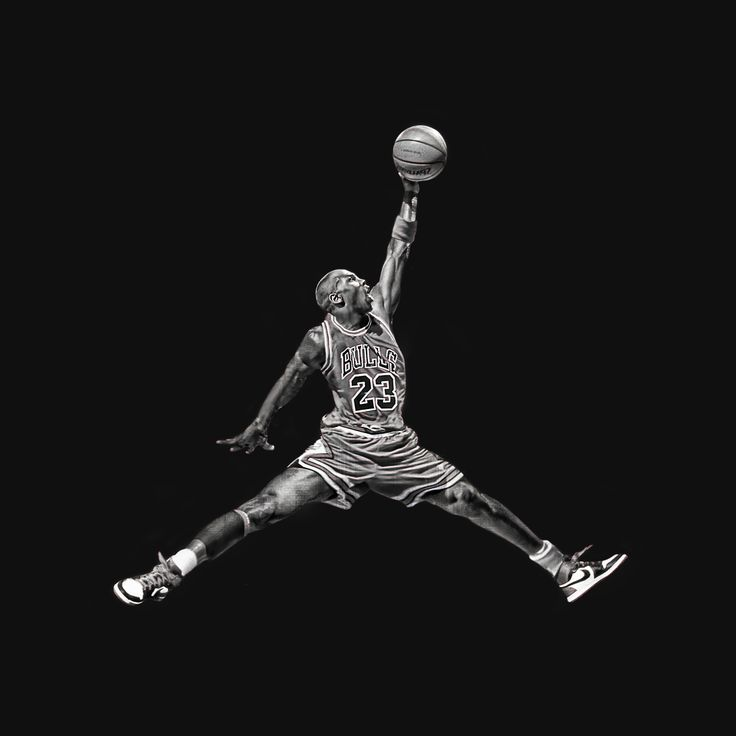

Ventas
Creadas para el entonces desconocido novato, las Air Jordan 1 se lanzaron el 1 de abril de 1985 y salieron a la venta por 64,99 dólares. Nike esperaba vender 100.000 pares en su primer año. En cambio, vendió 1,5 millones de pares en las seis primeras semanas.
"Cuando firmamos el acuerdo, Nike esperaba vender 3 millones de dólares en Air Jordans al final del cuarto año", explica Peter Falk, agente de Michael durante muchos años.
Colores
"La idea era romper la barrera del color en el calzado", escribió Moore en su libro de 1995 Peter Moore: A Portfolio. Antes, el 99% de las zapatillas eran blancas o negras, así que decidí diseñar una zapatilla que aceptara bien el color. Y los colores fueron el rojo, el negro y el blanco". Moore no los eligió al azar: pertenecían a la franquicia de los Chicago Bulls. Michael Jordan no estaba tan de acuerdo: los llamaba "los colores del diablo" y defendía sin éxito el azul de su uniforme universitario.

Logotipo JUMPMAN
Moore se incorporó más tarde a Adidas, primero como director creativo y luego brevemente como presidente. Aunque no ha recibido el reconocimiento de otros diseñadores de zapatillas, como Sergio Lozano (Air Max 95 de Nike), Steven Smith (InstaPump Fury de Reebok; Yeezy Boost 700 de Adidas) y Tinker Hatfield, se le rinde tributo en Air, interpretado con un bobalicón entusiasmo por el actor Matthew Maher. Según otras fuentes, el verdadero Moore era un personaje tranquilo que no amaba el entorno corporativo y que "soltaba por la boca una serie de maldiciones que podrían sonrojar a un marinero" (procedía de una familia naval). Moore también creó las Nike Dunk, otro lanzamiento de 1985 que ha resurgido últimamente, y diseñó el logotipo "Jumpman". Creado en 1997 y adaptado de una fotografía de la revista Life, la silueta "Jumpman" captura a Jordan en pleno vuelo, con el balón en la mano izquierda. Hoy es intercambiable con el "swoosh" de Nike en cientos de productos, además de estar inmortalizado en la canción de Drake de 2015 "Jumpman". Moore falleció en abril del año pasado, a los 78 años.

- Air Jordan I (1985):Las zapatillas que cambiaron el juego.
- Air Jordan II (1986):Estas zapatillas no son tan famosas ni aceptadas por la sociedad como otras pero fueron las pioneras en un detalle para nada menor: no usaban el logotipo de Nike
- Air Jordan III (1988):El estampado de cemento que nacía de la suela enamoró a todos.
- Air Jordan IV (1989):Otro modelo icónico de la marca por la introducción de unas “alas” que sujetaban los cordones y zonas con malla.
- Air Jordan V (1990):Con un diseño similar a su anterior modelo pero con detalles nuevos como las formas de dientes de tiburón que nacen de la suela, la cual tiene zonas translúcidas.
- Air Jordan VI (1991):Estas zapatillas son famosas porque fueron las primeras que llevaron a Michael Jordan a ganar un anillo.